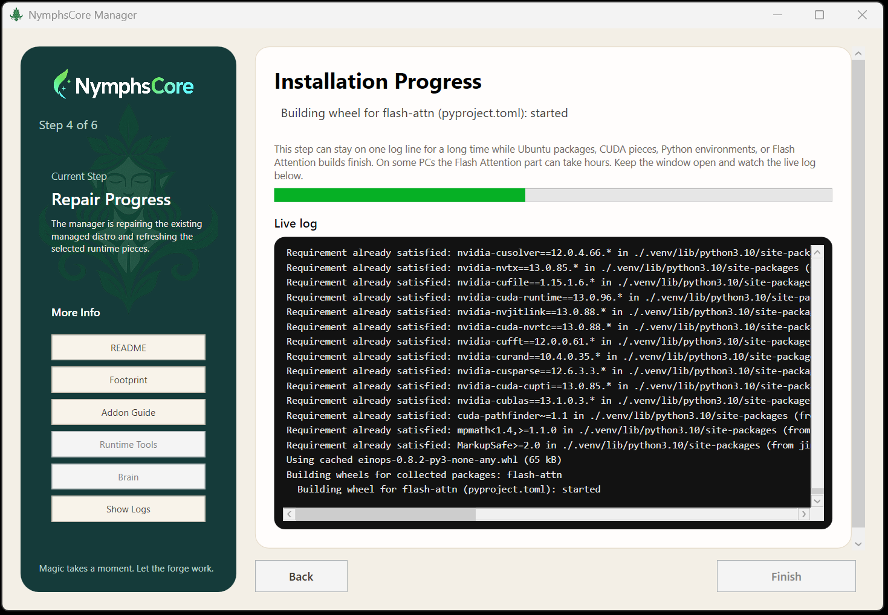
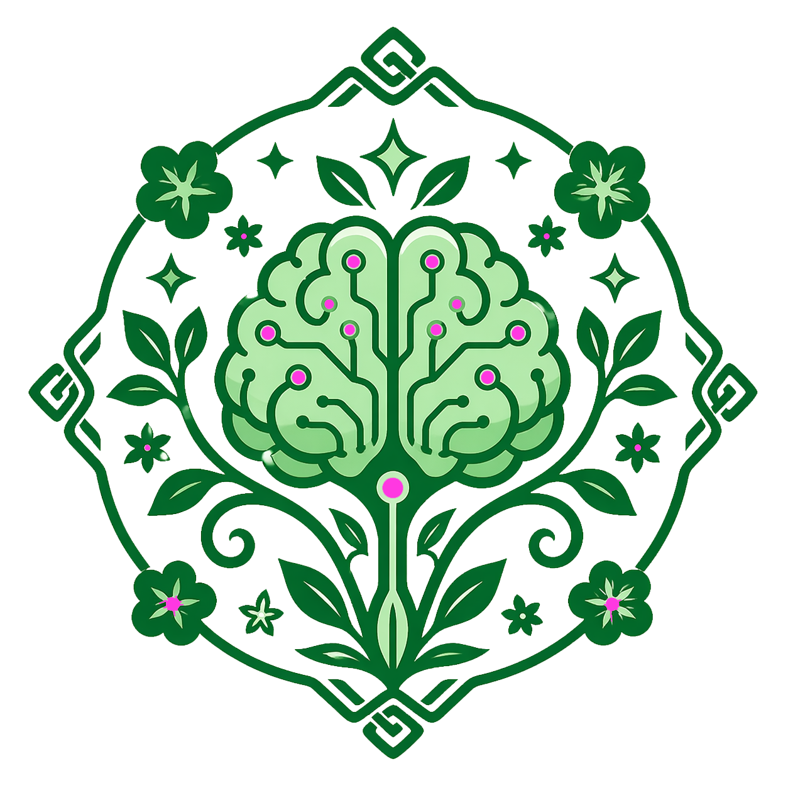
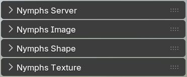
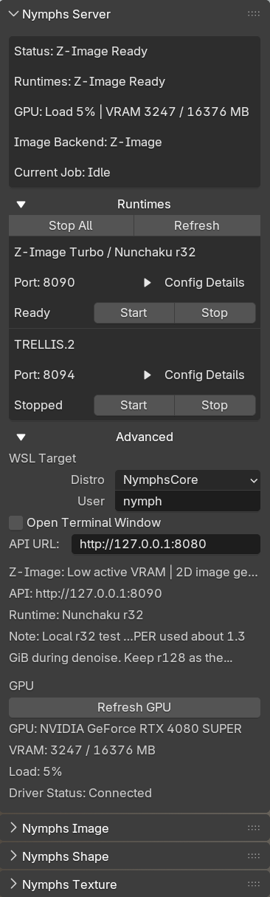
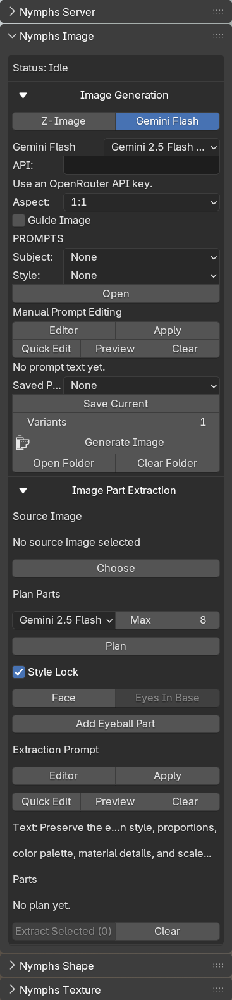
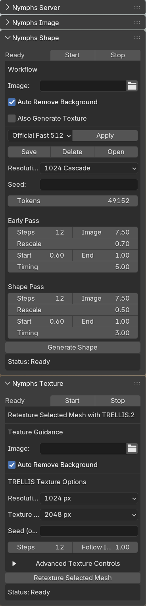

NymphsCore is a managed local AI pipeline for game artists. Generate references, edit them from guide images, extract modular character parts inside the image pipeline, and turn the result into textured 3D draft assets without building your own backend.
The sequence matters: image generation, image editing, and part extraction happen first in Nymphs Image. Then those images move into shape generation and retexturing.
Most local AI falls apart before it starts. The NymphsCore Manager handles the install and repair work so artists can focus on the pipeline instead of the plumbing.

NymphsCore's part extraction happens inside the image pipeline, before shape generation. Start with one master character image, plan the extractable parts, then feed those modular outputs into the later 3D pass.
Approachable enough to start quickly. Deep enough to tune once you know what you want out of the pipeline.

NymphsCore is stronger when it is specific. That focus is part of why the product story works.
NymphsCore runs through dedicated panels for server control, image generation and extraction, and shape-texture work, all inside the Blender sidebar.




NymphsCore gives Blender users one clearer path from image generation and image editing to modular part extraction and 3D draft assets.
Get NymphsCore on Superhive →